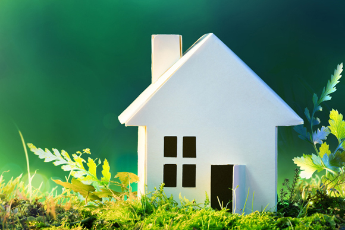

Projekts „Psihiatrijas pakalpojumu lietotāju tuvinieku atbalsta – izglītojošās grupas”
Biedrība “Gaismas stars” aicina psihiatrijas pakalpojumu lietotāju tuviniekus apmeklēt bezmaksas atbalsta – izglītojošās grupas
Vairāk
Meklējam telpas!
Tā nu ir sanācis, ka esam jaunas mājvietas meklējumos.
Dienas aprūpes centra vajadzībām nepieciešamas telpas 250- 300m2 platībā. Vēlams mūsu pašreizējās atrašanas vietas tuvumā- Grīziņkalnā, bet esam atvērti arī citiem piedāvājumiem! Cena ~4eur/m2. Priecāsimies arī tad, ja vienkārši padalīsies ar informāciju!
Epasts: gaismasstars@inbox.lv
Tālr.: 67272873
Dienas aprūpes centra vajadzībām nepieciešamas telpas 250- 300m2 platībā. Vēlams mūsu pašreizējās atrašanas vietas tuvumā- Grīziņkalnā, bet esam atvērti arī citiem piedāvājumiem! Cena ~4eur/m2. Priecāsimies arī tad, ja vienkārši padalīsies ar informāciju!
Epasts: gaismasstars@inbox.lv

Vairāk
Ziemassvētku tirdziņš t/c Dominā
.jpg) Laika posmā no 11.12.-28.12.2018. dienas aprūpes centram “Gaismas stars” sadarbībā ar Invalīdu un Mazturīgo Senioru Atbalsta Fondu (IMSA Fonds) bija iespēja piedalīties t/c “Domina Shopping” Ziemassvētku labdarības tirdziņā.
Laika posmā no 11.12.-28.12.2018. dienas aprūpes centram “Gaismas stars” sadarbībā ar Invalīdu un Mazturīgo Senioru Atbalsta Fondu (IMSA Fonds) bija iespēja piedalīties t/c “Domina Shopping” Ziemassvētku labdarības tirdziņā.
Vairāk
“Keramikas meistarnīca”

Pateicoties Ziedot.lv atbalstam veiksmīgi esam īstenojuši projektu “Keramikas meistarnīca”. Projekta ietvaros esam veikuši telpu labiekārtošanas darbus un pavadījuši trīs vērtīgas nodarbības pie pieredzējušiem meistariem keramikas darbnīcā Siguldā.
Vairāk
“Māls. Veidojam savu dzīvi”
Esam priecīgi un gandarīti par šovasar īstenoto projektu “Māls. Veidojam savu dzīvi”, ko finansēja RD Izglītības, kultūras un sporta departaments. Projekta ietvaros trīs dienas apguvām jaunas keramikas prasmes pie meistares Vinetas Trumpenieces Liepājā, kā arī divas dienas mācījāmies svilpaunieku veidošanas noslēpumus pie keramiķa Ivara Graša Apšuciemā.

Vairāk
Eiropa Parlamenta sēdē Cilvēkiem ar invaliditāti Briselē
Mūsu biedrības vadītāja Brigita Siliņa 06.12.2017. piedalījās Eiropa Parlamenta sēdē Cilvēkiem ar invaliditāti Briselē kopā Latvijas Cilvēku ar īpašām vajadzībām sadarbības organizāciju "Sustento".
Vairāk
Pieredzes apmaiņa Sanktpēterburgā.
.JPG)
Biedrības “Gaismas stars” pārstāvji pieredzes apmaiņas ietvaros apmeklēja Sanktpēterburgas sabiedrisko invalīdu organizāciju “Sociālās rehabilitācijas klubs “Fēnikss””, kur tikās ar organizācijas vadītāju O.I.Rjabovu un kluba darbiniekiem un locekļiem, un Sanktpēterburgas P.P.Kaščenko psihiatrisko slimnīcu Nr.1, kur notika tikšanās ar Viskrievijas sabiedriskās invalīdu organizācijas "Jaunās iespējas" pārstāvi K.M.Gebel un citiem slimnīcas vadošajiem darbiniekiem. Biedrības “ Gaismas stars” pārstāvjus vizītes laikā pavadīja invalīdu labdarības organizācijas “Ņevas kluba māja” vadītāja V.A.Vorobjova, kuras vadītā organizācija sniedz atbalstu psihiatrijas pacientu tuviniekiem.
Vairāk
Svētku noskaņās...
Tikko kā aizvadījām biedrības "Gaismas stars" 20 gadu jubileju ar izstādi "Portreti un pašportreti".
Paldies visiem par klātbūtni mūsu svētkos! Paldies par smaidiem, gaišām domām, kopības sajūtu un līdzdalību, lai padarītu šo dienu īpašu.
Paldies visiem par klātbūtni mūsu svētkos! Paldies par smaidiem, gaišām domām, kopības sajūtu un līdzdalību, lai padarītu šo dienu īpašu.
Vairāk
Sveiciens Ziemassvētkos!
Radošais projekts "Reiz Gaismas starā ... dzima eglīte"
tapis mūzikas nodarbību ietvaros Ievas Svētiņas vadībā.
tapis mūzikas nodarbību ietvaros Ievas Svētiņas vadībā.
Vairāk
Atskats uz Piektajiem latviešu kultūras svētkiem Īrijā
Pateicoties Pensionāru iespēju centram, biedrība "Gaismas stars" piedalījās Piektajos Īrijas latviešu kultūras svētkos Dublinā, kuri kopā pulcināja vairākus simtus dalībnieku un vairākus tūkstošus skatītāju. Pasākumu plaši apmeklēja gan Īrijas latviešu ģimenes, gan arī pārējie Dublinas iedzīvotāji un viesi, tai skaitā dažādi kolektīvi no Latvijas.Svētku ietvaros norisinājās dažādas aktivitātes- latviešu kolektīvu un biedrību tikšanās, danči, teātris, Latvijas un Īrijas kolektīvu koncerts, brīnišķīgs gardumu un amatnieku tirdziņš, kā arī tikšanās ar Latvijas kultūras ministri Daci Melbārdi.
Vairāk
Latviešu kultūras svētki Īrijā 2016.gada pavasarī
Biedrības "Gaismas stars" meistari pateicoties Pensionāru iespēju centram piedalīsies 5. Latviešu kultūras svētkos Īrijā, kas norisināsies no š.g. 30. aprīļa līdz 1.maijam.
Kultūras svētkos paredzētas jautras tirgus izdarības, teātris, dziesmas, danči, spēles un citas lustes kopā ar Latviešu Īrijā pašdarbības kolektīviem, tuviem un tāliem draugiem un ciemiņiem.
Kultūras svētkos paredzētas jautras tirgus izdarības, teātris, dziesmas, danči, spēles un citas lustes kopā ar Latviešu Īrijā pašdarbības kolektīviem, tuviem un tāliem draugiem un ciemiņiem.
Arī mēs - "Gaismas stara" rokdarbnieki esam gatavi iepriecināt lielus un mazus pasākuma apmeklētājus ar siltumu un mīlestību darinātām rotaļlietām.
Pasākumu organizē Latviešu biedrība Īrijā.
Vairāk
Ielūdzam uz izstādi "Mani Tēli" 15.09.-18.10.2015.
Biedrība "Gaismas stars"
Studija "Sava Istaba"
MANI TĒLI
Sergeja Guņina personālizstāde
15.09.- 18.10.2015.
Kultūras un atpūtas centrs "Imanta"
Vairāk
Kurp mākoņi aizlido?
Kurp mākoņi aizlido? .JPG)
Uz kuru zemi?
Tur nav nekā bailīga.
Gribi turp ciemos?
Pacelies pie mākoņiem.
Lūdz viņus.
Bet sākumā savācies.
Tas taču ir brīnums!
Tur debesis augstāk
Zilas- zilas!
Tur nav nekā bailīga.
Gribi turp ciemos?
Pacelies pie mākoņiem.
Lūdz viņus.
Bet sākumā savācies.
Tas taču ir brīnums!
Tur debesis augstāk
Zilas- zilas!
Bet lidot auksti.
Un ilgi.
Un ilgi.
Tur galā slēpjas
Bezgalīga laime.
Ja gribi,
Tur meklē laimīgo saimi.
Sergejs
Tur meklē laimīgo saimi.
Sergejs
Vairāk
Jaunā 2015. gada pavasara rokdarbu kolekcija ir klāt!
 Dienas centra apmeklētāji pavasarī turpina aktīvi darboties un mūsu darbnīcā ir tapušas jaunas un skaistas lietas.
Dienas centra apmeklētāji pavasarī turpina aktīvi darboties un mūsu darbnīcā ir tapušas jaunas un skaistas lietas. Vairāk
Mūsu rokdarbi Lieldienu tirdziņā!
.png)
Pateicoties Pensionāru iespēju centra atbalstam jau otro reizi mums ir iespēja parādīt savus meistardarbus Senioru un cilvēku ar īpašām vajadzībām labdarības tirdziņā Rīgas Centrālajā dzelzceļa stacijā. Trīs dienas, 27.-29.martā savus rokdarbu izstrādājumus piedāvās ap 150 meistaru no visas Latvijas.
Pasākuma atklāšanas dienā, 27.martā, no pulksten 10:00 līdz 18:00 plašākai publikai būs iespēja iepazīties arī ar mūsu dienas centra meistaru darinājumiem. Piedāvāsim gan mīļas rotaļlietas bērniem, gan dažādas praktiskas saimniecībā noderīgas lietas, kā piemēram, priekšautus, tašiņas un lāpstiņas virtuves darbiem.
Pasākuma atklāšanas dienā, 27.martā, no pulksten 10:00 līdz 18:00 plašākai publikai būs iespēja iepazīties arī ar mūsu dienas centra meistaru darinājumiem. Piedāvāsim gan mīļas rotaļlietas bērniem, gan dažādas praktiskas saimniecībā noderīgas lietas, kā piemēram, priekšautus, tašiņas un lāpstiņas virtuves darbiem.
Uz tikšanos tirdziņā!
Vairāk
Sveicam sievietes pavasara svētkos!
Sveicam sievietes pavasara svētkos ar Sergeja dzejoli "Meitenēm"!
Sveicinām Jūs, meitenes, Čaklās saimnieces,
Meitenes mīļās. Varenās burves,
Redzēt jūs vēlamies, Palīgā atnāksiet
Un ļoti Jūs mīlam. Dzīvības jūrā.
Meitenes, puķītes, Nebūsiet bailīgas
Puķītes skaistās. Sajūtu asu.
Dzīvības ugunis Mēs kaislīgu
Deg jūsu acīs. Mīlu prasām.
/Sergejs/

Vairāk
"Sava Istaba" aktīvi rosās!
Studija "Sava Istaba" turpina aktīvi darboties! Aizvadītā gada pēdējie mēneši ir pagājuši rosīgā atmosfērā. Paldies visiem, kuri aktīvi darbojās un mūs atbalstīja dažādos pasākumos!
Piedāvājam īsu ieskatu mūsu studijas aktivitātēs:Vairāk
Turpinām darboties studijā
Turpinām aktīvi darboties un gaidām savus apmeklētājus !
Pateicoties Borisa un Ināras Teterevu fonda atbalstam studija "Sava Istaba" turpina darbu.
Pateicoties Borisa un Ināras Teterevu fonda atbalstam studija "Sava Istaba" turpina darbu.
Studijas darba laiks :
OTRDIENĀS: 12.00-18.00
TREŠDIENĀS: 12.00-18.00
CETURTDIENĀS: 11.00-19.00
.jpg)
TREŠDIENĀS: 12.00-18.00
CETURTDIENĀS: 11.00-19.00
Vairāk
Video par izstādi "Adhēzija"
Projekta mākslas studijas "Sava istaba" otrā gada noslēguma izstāde "Adhēzija" Paula Stadiņa medicīnas vēstures muzejā
Vairāk
Izstāde 25.09.- 20.10.2014.
.jpg)
Vairāk
Aizvadīta izstāde
(1).jpg)
Vairāk
Paldies visiem, kas atbalstīja mūsu video OpenMind projektu konkursā 2014!
Pateicamies visiem, kas piedalījās balsojumā, lai palīdzētu mums rast iespēju noorganizēt brīvdabas adaptācijas nodarbību ciklu
"Es kā indivīds- grupas daļa"!
https://www.youtube.com/watch?v=ZVpyrEH5Qgw
"Es kā indivīds- grupas daļa"!
https://www.youtube.com/watch?v=ZVpyrEH5Qgw
Lai arī neesam savākuši nepieciešamo balsu skaitu, tomēr nezaudējam cerības, ka ieinteresētas personas vai organizācijas varētu mūs atbalsīt. Priecāsimies par jebkāda veida atbalstu, lai brīvdabas adaptācijas nodarbības šovasar tomēr notiktu.
(1).JPG)
Vairāk
Jau otro gadu aicināti darboties studijā „Sava istaba”
Liels prieks, ka studijā „Savā istabā” viss turpinās!
Otrdienās 10:00 - 20:00
Trešdienās 10:00 - 18:00
Ceturtdienās 11:00 - 19:00
Piektdienās 10:00 - 18:00
Vairāk
Vairāk laimes!!!
Endorfīni ir laimes hormoni, kas izdalās asinīs pastiprinātas fiziskās aktivitātes laikā.
Biedrības "Gaismas stars"
klienti to nolēma pārbaudīt praksē -
ziemas pārgājienā!
Vairāk
Tuvinieku atbalsta-izglītojošo grupu metodiskais materiāls
Ar Rīgas domes Labklājības departamenta programmas "Sadarbība ar nevalstiskajām organizācijām" finansiālu atbalstu, laika posmā no 15.11.-15.12.2013. tika īstenots projekts „Psihiatrijas pakalpojumu lietotāju tuvinieku atbalsta – izglītojošās grupas”.
Projekta ietvaros tika noorganizētas divas atbalsta grupas tuviniekiem, kā arī izveidots metodiskais materiāls, kas var būt noderīgs gan speciālistiem organizējot atbalsta grupas savās prakses vietās, gan personām ar psihiskās veselības traucējumiem un viņu ģimenes locekļiem.
Metodisko materiālu skatīt šeit:
/userfiles/files/Atbalsta%20grupu%20metodiskais%20materials.docx
Vairāk
Piedalāmies ''Dāvanu jampadracī Grīziņkalnā 2013

21. decembrī "Koka Rīgas" telpās "Grīziņkalna patrioti" rīkos Ziemassvētku tirdziņu "Dāvanu jampadracis Grīziņkalnā".
Biedrība "Gaismas stars" tirdziņā piedāvās iegādāties dienas centra apmeklētāju gatavotās rotaļlietas, priekšautus un izšuvumus, darbnīcas "Sava istaba" mākslinieku veidotās Ziemassvētku kartiņas, dekorus un neliela formāta glezniņas, kā arī darbnīcā "Juhū" tapušās sociālā dizaina krūzītes "Terēze".
Atnāc un izvēlies savu dāvanu!
Vairāk
2013.gada 9.novembrī izstādes atklāšana Ģertrūdes ielas teātrī

2013.gada 9.novembrī plkst 17.00 Ģertrūdes ielas teātrī tiks atklāta Kopienas mākslas studijas "Sava istaba" darbu izstāde. Izstādē būs apskatāmi projekta laikā tapušie mākslas darbi, kā arī video materiāls par mākslas studijas sadzīvi un radošo darbu tapšanas gaitu.
Pēc izstādes atklāšanas pasākuma apmeklētāji tiek aicināti noskatīties Ģertrūdes ielas teātra izrādi "Āda", kas sāksies plkst.19.00. Bezmaksas ielūgumu uz teātra izrādi ir iespējams saņemt piesakoties iepriekš: rakstot uz e-pastu:gaismasstars@inbox.lv vai zvanot pa tālruni 67272873.
Izstāde būs apskatāma no 9. līdz 17.novembrim, vakara stundās 17.00-20.00.
www.git.lv
https://www.facebook.com/events/680466071973174/
Projekts tiek finansēts Rīgas domes Izglītības, kultūras un sporta departamenta sabiedrības integrācijas programmas ietvaros.
Vairāk
Projekts ''Izaicinājums kā pārmaiņas"

Ar Latvijas Valsts mežu finansiālu atbalstu, 25 dienas aprūpes centra "Gaismas stars" apmeklētāji augusta mēnesī piedalījās četru dienu nodarbību ciklā "Izaicinājums kā pārmaiņas", kas norisinājās Salacgrīvas lauku teritorijā.
Pasākuma galvenais mērķis bija veicināt dalībnieku patstāvīgās domāšanas un vērtēšanas iemaņas, kā arī attīstīt produktīvas sadarbības spējas.
Vairāk
Sākas jaunas atbalsta - izglītojošās grupas tuviniekiem
Ar 2013.gada 15.oktobri biedrība uzsāk realizēt projektu "Psihiatrijas pakalpojumu lietotāju tuvinieku atbalsta - izglītojošās grupas".Projekta ietvaros paredzēts noorganizēt divas atbalsta grupas, kopumā 28 personām.
Atbalsta grupu norises vieta:
biedrības „Gaismas stars” telpas, Pērnavas iela 62, 3.stāvs, Rīga
Atbalsta grupu norises laiks: darba dienās, plkst. 17.30 (dienas tiks precizētas)
Pieteikšanās laiks: līdz š.g. 17.oktobrim
Atbalsta grupas noritēs no š.g. 15.oktobra līdz 13.decembrim.
Kontaktinformācija:
Biedrības „Gaismas stars” vadītāja Brgita Siliņa
67272873
Vairāk
„Sava istaba” vasarā
 Vasaras mēnešos turpinās gleznošana darbnīcā „Sava istaba ”. Joprojām top individuālas kompozīcijas dažādās tehnikās, ir jau notikusi kopīga modeļa studija, un vēl taps buru kuģi plenērā http://www.latvia.travel/lv/pasakums/starptautiska-buru-kugu-regate-tall-ships-races-2013, kuru no 25.07- 28.07. 2013. organizē māksliniece Alise Mediņa .
Vasaras mēnešos turpinās gleznošana darbnīcā „Sava istaba ”. Joprojām top individuālas kompozīcijas dažādās tehnikās, ir jau notikusi kopīga modeļa studija, un vēl taps buru kuģi plenērā http://www.latvia.travel/lv/pasakums/starptautiska-buru-kugu-regate-tall-ships-races-2013, kuru no 25.07- 28.07. 2013. organizē māksliniece Alise Mediņa .Visus interesentus laipni aicinu atsaukties dalībai plenērā, kā arī dalībai „Savā istabā”- vietas vēl daudz!
Rakstīt: katrina.gaile@gmail.com ,
zvanīt: Katrīnai 26109482, „Gaismas stars” 67272873
Vairāk
Atvērta pirmā JūHū tīkla darbnīca
Sociālā dizaina zīmols Jūhū un biedrība "Gaismas stars" ir uzsākusi sadarbību kuras rezultātā ir izveidota jauna keramikas darbnīca un ceplis.
JūHū ir unikāls tīkls, kurš atbalsta vietējo ekonomiku, savedot kopā dizainerus un sociālajai atstumtībai pakļautās personas, lai kopīgi radītu augstas klases dizainu, kas tiek tirgots labākajos dizaina veikalos.
JūHū radītais tīkls stiprina godīgu un ilgtspējīgu ražošanu, visi dalībnieki ir ieguvēji no šīs sitēmas.
Vairāk
Jauns mantiņu pievedums salonā
.JPG)
Veikalā "Saulgrieze" ir apskatāmas un iegādājamas jaunas mīkstās rotaļlietas, ko darinājuši biedrības
"Gaismas stars" biedri.
Vairāk
Mākslas projekts
Ar 2013.gada 1.martu biedrība „Gaismas stars” uzsāk realizēt jaunu mākslas projektu studiju „Sava istaba”, kas ir darbnīca zīmēšanai, gleznošanai, varbūt arī veidošanai.
2013.gada 1.martu biedrība „Gaismas stars” uzsāk realizēt jaunu mākslas projektu studiju „Sava istaba”, kas ir darbnīca zīmēšanai, gleznošanai, varbūt arī veidošanai.
"Sava istaba” ir atvērta telpa, kurā patīkamā gaisotnē iepazīt vienam otru un radīt mākslu no idejas dzimšanas līdz pat realizācijai ir aicināti dažādi cilvēki – mūsu biedrības mērķa grupa- cilvēki ar garīgām saslimšanām un visi citi, kurus vieno kopīga interese- radīt mākslu.
2013.gada 1.martu biedrība „Gaismas stars” uzsāk realizēt jaunu mākslas projektu studiju „Sava istaba”, kas ir darbnīca zīmēšanai, gleznošanai, varbūt arī veidošanai."Sava istaba” ir atvērta telpa, kurā patīkamā gaisotnē iepazīt vienam otru un radīt mākslu no idejas dzimšanas līdz pat realizācijai ir aicināti dažādi cilvēki – mūsu biedrības mērķa grupa- cilvēki ar garīgām saslimšanām un visi citi, kurus vieno kopīga interese- radīt mākslu.
Vairāk